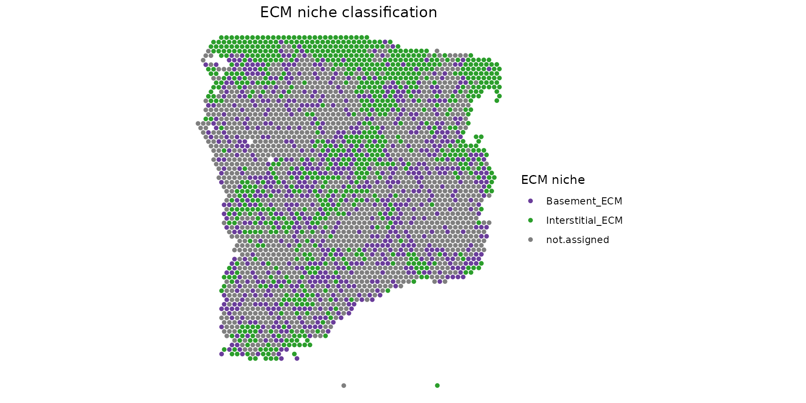
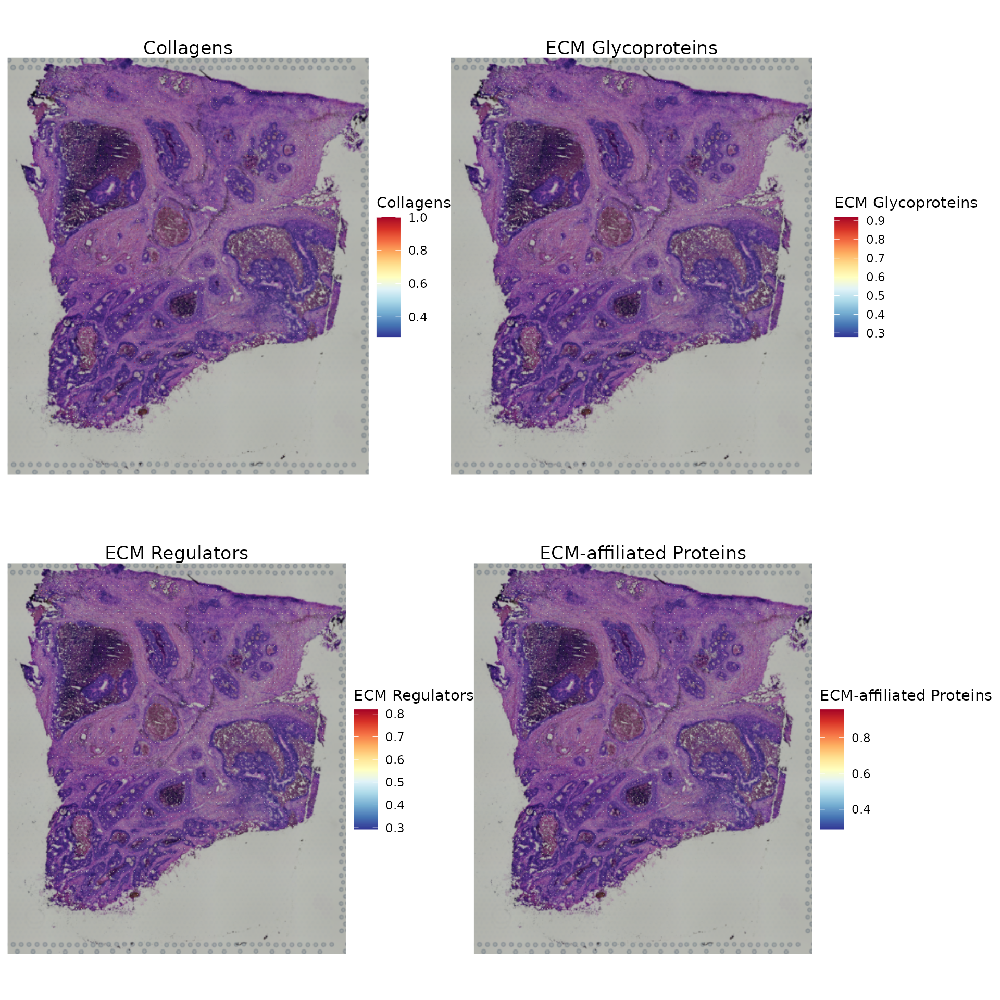
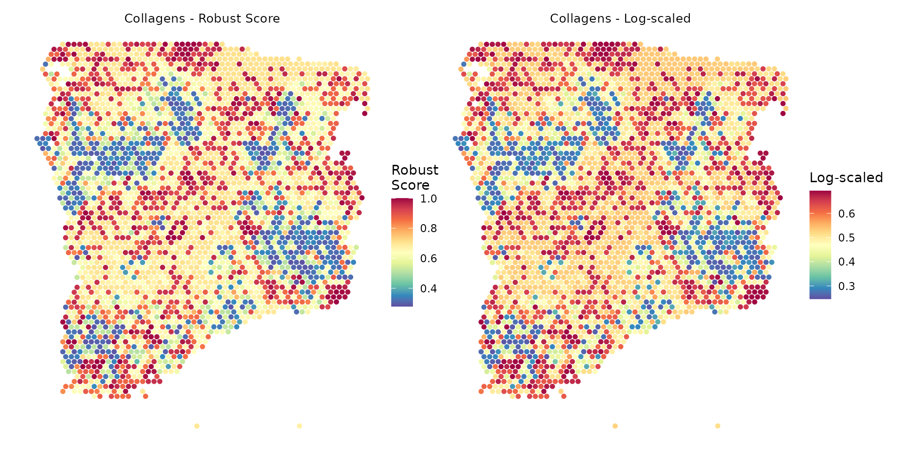
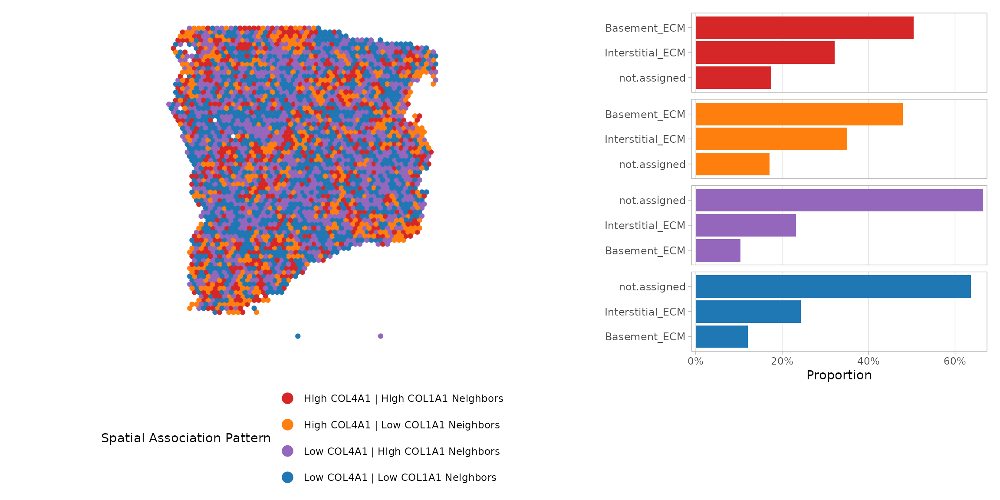
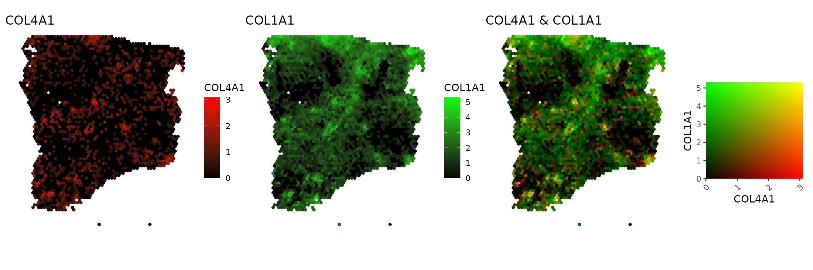
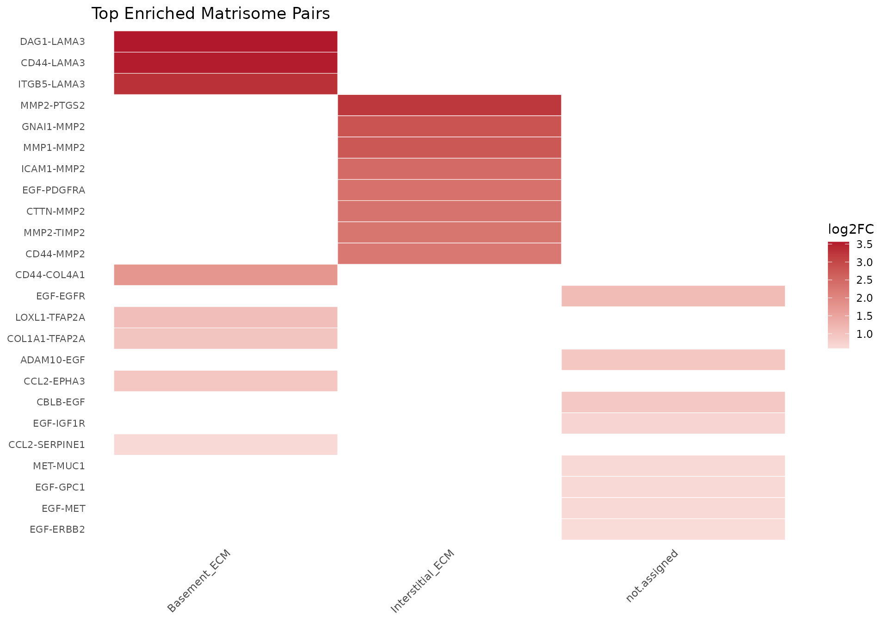
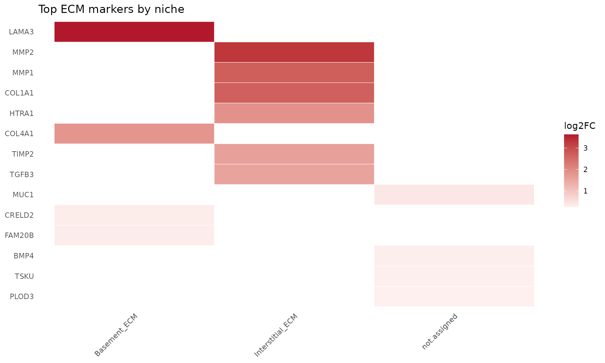

MatriSpace: Spatially-Resolved ECM Gene Expression Patterns
Oshinjo A, Chen D, Petrov P, Izzi V, Naba A
2026-11-24
Source:vignettes/matrispace-demo.Rmd
matrispace-demo.RmdOverview
matrispace analyzes the extracellular matrix (matrisome) in spatial transcriptomics data. This demo shows:
- ECM niche classification
- Matrisome expression mapping
- Spatial co-localization (LISA)
- Spatial co-expression analysis of matrisome pairs
Test dataset: Spatial transcriptomics sample with matrisome annotation
ECM Niche Annotation
Each spot is classified into an ECM niche (e.g. Interstitial, Basement membrane) using ScType.
table(seurat_obj$ecm_niche)
#>
#> Basement_ECM Interstitial_ECM not.assigned
#> 768 853 1517
ecm_colors <- palette_ecm(unique(seurat_obj$ecm_niche))
coords <- GetTissueCoordinates(seurat_obj)
plot_df <- data.frame(
imagecol = coords$imagecol,
imagerow = coords$imagerow,
niche = seurat_obj$ecm_niche
)
ggplot(plot_df, aes(x = imagecol, y = imagerow, color = niche)) +
geom_point(size = 1.3) +
scale_color_manual(values = ecm_colors, name = "ECM niche") +
scale_y_reverse() +
coord_fixed() +
theme_void() +
labs(title = "ECM niche classification") +
theme(plot.title = element_text(hjust = 0.5), legend.position = "right")
Matrisome Expression
UCell scores for matrisome categories visualized spatially.
p1 <- plot_spatial_feature(seurat_obj, "Collagens", pt.size = 1.3)
p2 <- plot_spatial_feature(seurat_obj, "ECM Glycoproteins", pt.size = 1.3)
p3 <- plot_spatial_feature(seurat_obj, "ECM Regulators", pt.size = 1.3)
p4 <- plot_spatial_feature(seurat_obj, "ECM-affiliated Proteins", pt.size = 1.3)
(p1 | p2) / (p3 | p4)
Dual Normalization View
Robust-normalized and log-scaled scores side-by-side:
seurat_obj$collagens_robust_score <- seurat_obj@meta.data[["Collagens"]]
seurat_obj$collagens_log_scaled_score <- log1p(seurat_obj@meta.data[["Collagens"]])
plot_matrisome(seurat_obj, "Collagens", "collagens", pt.size = 1.3)
Spatial Co-localization (LISA)
LISA (Local Indicators of Spatial Association) identifies where two features cluster together spatially.
# Analyze COL4A1 vs COL1A1 spatial relationship
lisa_results <- compute_lisa(
seurat_obj,
feature1 = "COL4A1", feature1_type = "gene",
feature2 = "COL1A1", feature2_type = "gene"
)
lisa_results$id <- seurat_obj$ecm_niche
table(lisa_results$LISA)
#>
#> High.High High.Low Low.High Low.Low
#> 539 557 987 1055
plot_lisa(
lisa_results,
ann_col = "id",
f1_name = "COL4A1",
f2_name = "COL1A1"
)
Interpretation:
| Pattern | Meaning |
|---|---|
| High-High (red) | COL4A1 high, surrounded by COL1A1 high |
| High-Low (orange) | COL4A1 high, surrounded by COL1A1 low |
| Low-High (purple) | COL4A1 low, surrounded by COL1A1 high |
| Low-Low (blue) | Both low |
Two-Feature Blend
Visualize co-expression with a 2D color gradient:
plot_spatial_blend(
seurat_obj,
features = c("COL4A1", "COL1A1"),
feature1_name = "COL4A1",
feature2_name = "COL1A1"
)
Matrisome Pair Co-expression Analysis
Matrisome-pair scoring measures spatial co-expression across adjacent spots for unique heterotypic MatriComDB pairs. It does not infer signaling direction or communication activity.
seurat_obj <- score_matrisome_pair_coexpression(seurat_obj, verbose = FALSE)
cat("Matrisome pairs scored:", nrow(seurat_obj[["MATRISOMEPAIR"]]))
#> Matrisome pairs scored: 181Enrichment by ECM Niche
pair_stats <- find_matrisome_pair_enrichment(seurat_obj, group_by = "ecm_niche")Top Interactions per Niche
get_top <- function(cluster, n = 5) {
pair_stats %>%
filter(cluster == !!cluster) %>%
slice_max(avg_log2FC, n = n) %>%
select(feature, avg_log2FC, perc_difference)
}Interstitial ECM niche:
get_top("Interstitial_ECM")
#> feature avg_log2FC perc_difference
#> MMP2-PTGS2 MMP2-PTGS2 3.222120 0.01203629
#> GNAI1-MMP2 GNAI1-MMP2 2.824030 0.15639229
#> MMP1-MMP2 MMP1-MMP2 2.754735 0.10817016
#> ICAM1-MMP2 ICAM1-MMP2 2.473668 0.39332001
#> EGF-PDGFRA EGF-PDGFRA 2.362420 0.01026984Basement membrane ECM niche:
get_top("Basement_ECM")
#> feature avg_log2FC perc_difference
#> DAG1-LAMA3 DAG1-LAMA3 3.558321 0.419587289
#> CD44-LAMA3 CD44-LAMA3 3.523892 0.425253824
#> ITGB5-LAMA3 ITGB5-LAMA3 3.307882 0.405228112
#> CD44-COL4A1 CD44-COL4A1 1.750784 0.466801820
#> LOXL1-TFAP2A LOXL1-TFAP2A 1.077630 0.005775316Heatmap
top_pairs <- pair_stats %>%
group_by(cluster) %>%
slice_max(avg_log2FC, n = 8) %>%
ungroup()
ggplot(top_pairs, aes(x = cluster, y = reorder(feature, avg_log2FC), fill = avg_log2FC)) +
geom_tile(color = "white") +
scale_fill_gradient2(low = "#2166ac", mid = "white", high = "#b2182b", midpoint = 0) +
theme_minimal(base_size = 11) +
theme(
axis.text.x = element_text(angle = 45, hjust = 1),
axis.text.y = element_text(size = 8),
panel.grid = element_blank()
) +
labs(x = NULL, y = NULL, fill = "log2FC",
title = "Top Enriched Matrisome Pairs")
Differential ECM Expression
Identify ECM genes differentially expressed between ECM niches.
Markers for one niche
Compare Interstitial ECM vs all other niches:
interstitial_markers <- find_ecm_markers(
seurat_obj,
ident.1 = "Interstitial_ECM",
group.by = "ecm_niche",
verbose = FALSE
)
head(interstitial_markers[, c("gene", "avg_log2FC", "p_val_adj", "subcategory")])
#> gene avg_log2FC p_val_adj subcategory
#> MMP2 MMP2 3.3058418 0 ECM Regulators
#> TIMP2 TIMP2 1.6173382 0 ECM Regulators
#> COL1A1 COL1A1 2.6826532 0 Collagens
#> HTRA1 HTRA1 1.8637192 0 ECM Regulators
#> IGFBP3 IGFBP3 1.2185214 0 ECM Glycoproteins
#> CTSD CTSD 0.7269459 0 ECM RegulatorsAll niche markers
Find ECM markers for each niche simultaneously:
all_markers <- find_all_ecm_markers(
seurat_obj,
group.by = "ecm_niche",
verbose = FALSE
)
# Top 3 markers per niche
all_markers %>%
group_by(cluster) %>%
slice_max(avg_log2FC, n = 3) %>%
select(cluster, gene, avg_log2FC, subcategory)
#> # A tibble: 9 × 4
#> # Groups: cluster [3]
#> cluster gene avg_log2FC subcategory
#> <chr> <chr> <dbl> <chr>
#> 1 Basement_ECM LAMA3 3.63 ECM Glycoproteins
#> 2 Basement_ECM COL4A1 1.81 Collagens
#> 3 Basement_ECM CRELD2 0.326 ECM Glycoproteins
#> 4 Interstitial_ECM MMP2 3.31 ECM Regulators
#> 5 Interstitial_ECM MMP1 2.71 ECM Regulators
#> 6 Interstitial_ECM COL1A1 2.68 Collagens
#> 7 not.assigned MUC1 0.390 ECM-affiliated Proteins
#> 8 not.assigned BMP4 0.285 Secreted Factors
#> 9 not.assigned TSKU 0.261 ECM GlycoproteinsCategory-Specific Analysis
Filter to specific matrisome categories (e.g., collagens only):
collagen_markers <- find_ecm_markers(
seurat_obj,
ident.1 = "Basement_ECM",
group.by = "ecm_niche",
categories = "Collagens",
verbose = FALSE
)
collagen_markers[, c("gene", "avg_log2FC", "p_val_adj")]
#> gene avg_log2FC p_val_adj
#> COL4A1 COL4A1 1.8055617 0.000000e+00
#> COL1A1 COL1A1 -0.9341397 3.989846e-05Visualization
top_de <- all_markers %>%
filter(p_val_adj < 0.05) %>%
group_by(cluster) %>%
slice_max(avg_log2FC, n = 6) %>%
ungroup()
ggplot(top_de, aes(x = cluster, y = reorder(gene, avg_log2FC), fill = avg_log2FC)) +
geom_tile(color = "white") +
scale_fill_gradient2(low = "#2166ac", mid = "white", high = "#b2182b", midpoint = 0) +
theme_minimal(base_size = 11) +
theme(
axis.text.x = element_text(angle = 45, hjust = 1),
panel.grid = element_blank()
) +
labs(x = NULL, y = NULL, fill = "log2FC", title = "Top ECM markers by niche")
Summary
| Function | What it does |
|---|---|
annotate_ecm_niches() |
Classify spots into ECM niches |
score_matrisome() |
Calculate matrisome category scores |
plot_spatial_feature() |
Map any feature spatially |
compute_lisa() |
Spatial co-localization statistics |
plot_lisa() |
Visualize LISA clusters |
plot_spatial_blend() |
Two-feature overlay |
score_matrisome_pair_coexpression() |
Matrisome-pair spatial co-expression scoring |
find_matrisome_pair_enrichment() |
Matrisome-pair enrichment per group |
find_ecm_markers() |
DE between two groups |
find_all_ecm_markers() |
DE for all clusters |
Session Info
si <- sessionInfo()
cat("R version:", si$R.version$version.string, "\n")
#> R version: R version 4.6.2 (2026-10-29)
cat("Platform:", si$platform, "\n\n")
#> Platform: x86_64-pc-linux-gnu
cat("Key packages:\n")
#> Key packages:
pkgs <- c("matrispace", "Seurat", "SeuratObject", "ggplot2", "UCell")
for (pkg in pkgs) {
if (pkg %in% names(si$otherPkgs)) {
cat(" ", pkg, ":", as.character(packageVersion(pkg)), "\n")
}
}
#> matrispace : 0.1.0
#> Seurat : 6.0.0
#> SeuratObject : 5.4.0
#> ggplot2 : 4.0.4